|
Meteo Watcher |
||
|
|
|
|
| Meteo Watcher es un monitor meteorológico, diseñado para controlar la seguridad del observatorio mientras está operativo, ya sea gestionado de manera presencial o remota. Es una herramienta especializada en parámetros climatológicos relevantes en astronomía: Nubosidad, Temperatura ambiente, Humedad, Punto de Rocío, Luminosidad, Lluvia y Viento. Meteo Watcher no es una estación meteorológica, pues no cumple con los estándares que éstas requieren y no debiera usarse para tal fin. |
| 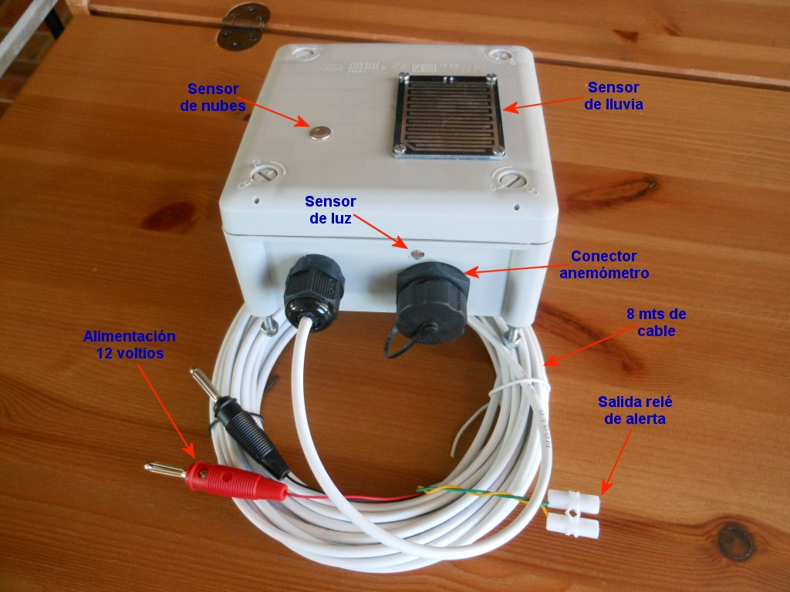 | 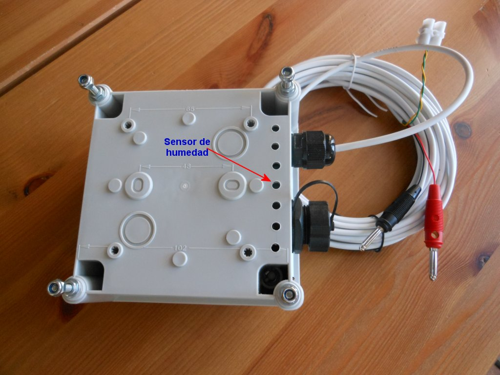 |
|
|
|
| 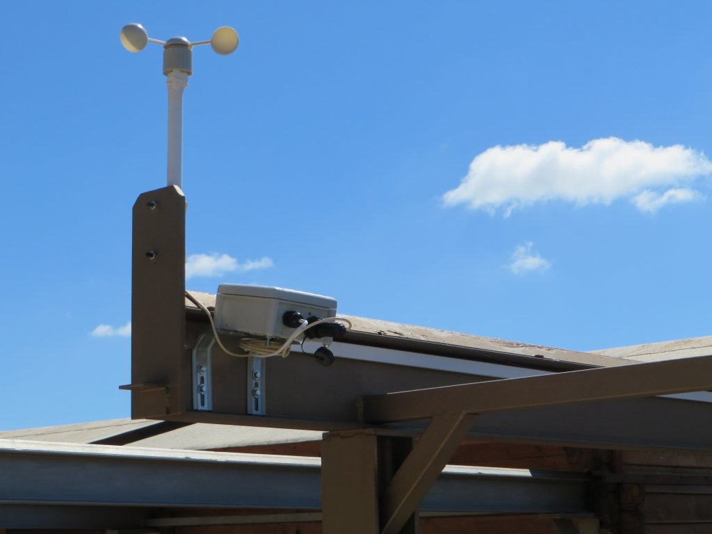 | 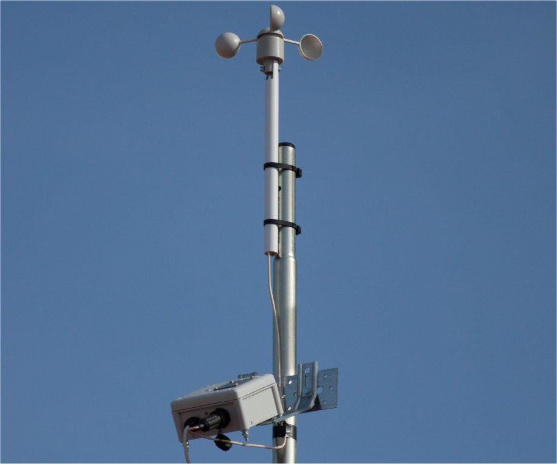 |
| 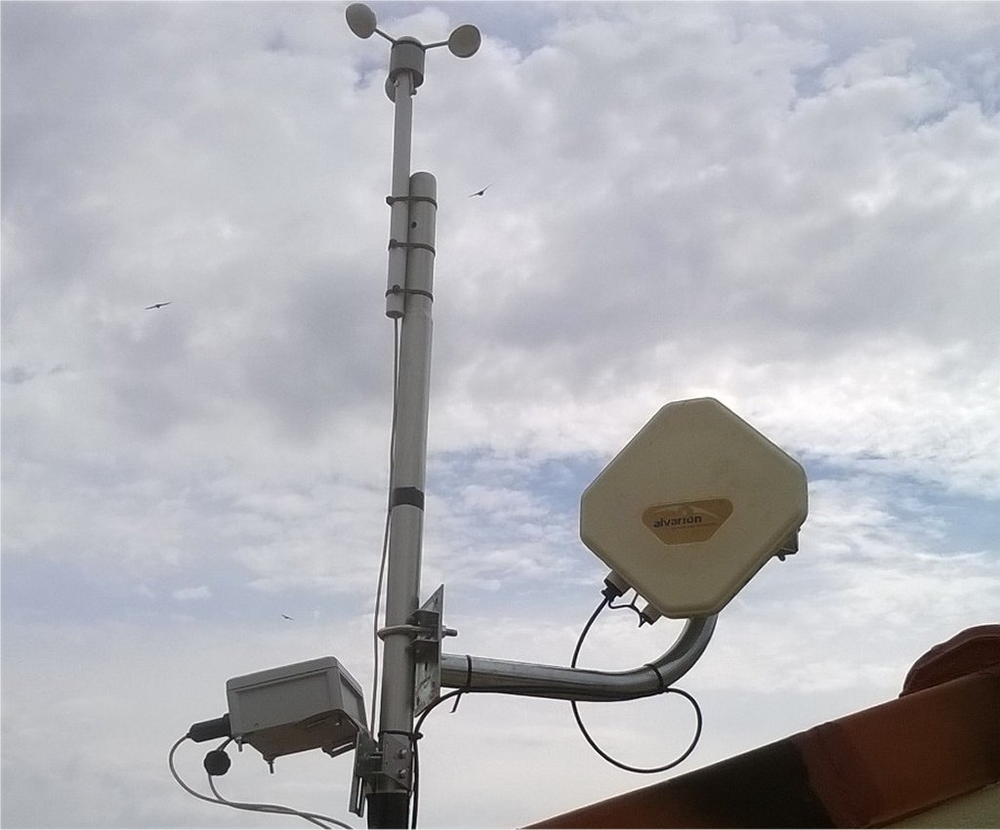 | 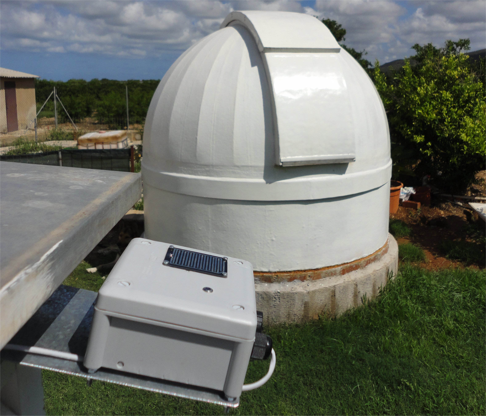 |
| Meteo Watcher se monta en
una caja PVC
de 102mm X 102mm X 56mm y con grado de protección IP66. 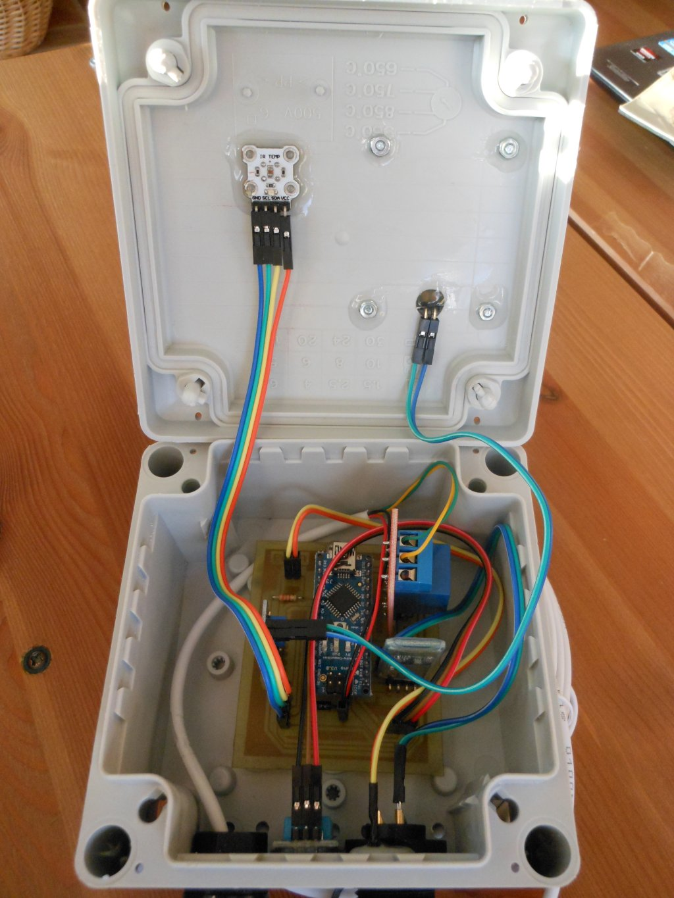 En su diseño se ha buscado practicidad y operatividad, proporcionando información en tiempo real, dejando a un lado la presentación de gráficas que, aunque puedan resultar muy vistosas, no aportan valor ni seguridad al observatorio. Meteo Watcher proporciona una salida de relé que permite actuar sobre otros dispositivos y/o alarmas, en el caso de que las condiciones de uso del observatorio no sean seguras. Las comunicaciones entre el ordenador de control del observatorio y el Meteo Watcher se realizan mediante tecnología Bluetooth, por lo que sólo es necesario llevar un cable de 2 pares de hilos hasta el observatorio: Un par de hilos destinados a proporcionar alimentación a 12V, y otro par de hilos destinados a conducir la salida del relé que permitirá interactuar con sistemas de alarma u otro dispositivo que atienda la apertura/cierre del observatorio. La distribución del Meteo Watcher incluye un adaptador USB Dongle CRS 4.0 (con sus correspondientes drivers y software de implementación del protocolo de Bluetooth) por si el ordenador que se va a utilizar no dispone de Bluetooth. El programa de configuración y monitorización permite al usuario controlar en tiempo real los valores medioambientales y configurar el comportamiento del Meteo Watcher. Además, proporciona un medio de interconexión compatible con el modo Boltwood/Clarity II Remote, por lo que le permite interactuar con la mayoría de los programas destinados a la automatización de observatorios, como puede ser CCD Commander o CCD Auto Pilot. Por esta misma razón es compatible con ASCOM Safety Monitor. Tanto la información proporcionada en la ventana principal como en el registro de intercambio de información para otros programas se actualiza cada 30 segundos. Meteo Watcher es un dispositivo de medición de parámetros medioambientales, que lejos de ser absolutos, son dependientes del lugar de instalación y época del año en la que nos encontremos, por lo que será necesario realizar ajustes en los parámetros hasta disponer de una configuración acorde a nuestra ubicación geográfica. En cualquier caso, Meteo Watcher no es una estación meteorológica y no debe usarse como tal. Adicionalmente, Meteo Watcher también controla que el ordenador al que está conectado sigue operativo, ya que probablemente sea el mismo que controle el funcionamiento del observatorio. En caso de dejar de recibir sus "latidos" (transcurridos 90 segundos) entenderá que la instalación se encuentra en estado crítico y actuará sobre el Relé de apertura, lo que permitirá actuar, por ejemplo, sobre el cierre automático del observatorio. En el momento que vuelve a detectar la presencia del sistema informático desarmará el relé, desactivando el estado de alerta y permitiendo reabrir el observatorio. Meteo Watcher controla la humedad y la temperatura ambiente, y por tanto conoce la temperatura de rocío (punto de rocío). Esto facilita configurar las alertas para que se cierre el observatorio en caso de alcanzar una humedad límite o que la temperatura de rocío se acerque demasiado a la temperatura ambiente. En ocasiones se cuida mucho el rocío en las lentes, pero se olvida que puede ser también muy dañino en la electrónica que rodea a nuestro telescopio (ordenadores, cámaras, enfocadores, etc). E incluso que debido al hielo sea imposible cerrar el observatorio. Meteo Watcher está compilado en .NET 4.0, por lo que es posible utilizarlo en Windows XP, 7, 8 y 8.1. Al mismo tiempo, ha sido programado para que la interpretación del separador de decimales, ya sea coma o punto, no sea un problema y se adapte a la configuración regional del sistema donde se ejecuta. |
Opcionalmente se puede
conectar a Meteo Watcher un anemómetro. Cualquiera que funcione por pulsos (relé
reed).
Yo en concreto utilizo el anemómetro que se ve en las fotos. Es un modelo básico y económico, que se utiliza en numerosas estaciones meteorológicas y que proporciona un resultado muy satisfactorio. Este anemómetro se compra como elemento de sustitución de una estación meteorológica, por lo que viene sin báculo y el cable que trae es extremadamente corto. Esto obliga a tener que desarmarlo por completo para soldar un cable más largo (2 mts). Respecto al báculo, he ideado una solución simple y eficaz, que permite sujetar el anemómetro de manera sencilla. El anemómetro se conecta al Meteo Watcher a través de un conector estanco, que se proporciona junto con la opción del anemómetro. El Meteo Watcher ya incluye en la caja el conector hembra donde enchufar el anemómetro, como puede verse en las fotos anteriores. |
| Medidas de seguridad
adicionales que proporciona Meteo Watcher
|
Además de la seguridad que proporciona disponer de un dispositivo de este tipo en cuanto a parámetros medioambientales, Meteo Watcher proporciona una serie de medidas de seguridad frente a fallos no previstos, que son:
|
| Instalación de Meteo Watcher
|
| Meteo Watcher no necesita
instalación. Descomprima el fichero MeteoWatcher-6.4.4.zip en el directorio donde decida ubicarlo. La clave de conexión como dispositivo Bluetooth es 1234. Si necesita ayuda para configurar el dispositivo Bluetooth pulse aquí. La primera vez que ejecute el programa MeteoWatcher.exe entrará directamente en el interfaz de configuración, donde se le sugerirán unos valores por defecto para todos los parámetros. Una vez ajustados los parámetros de configuración debe pulsar el botón Guardar para que se almacene en disco la configuración establecida. El dispositivo hardware Meteo Watcher deberá colocarse en una ubicación despejada del observatorio, aunque suficientemente cercana para que se mantenga el enlace Bluetooth, y observando una ligera inclinación para evitar se retenga agua en la parte superior del mismo, conforme se puede ver en la foto anterior. |
| Información
proporcionada por
Meteo Watcher 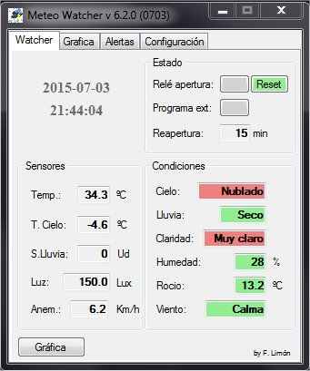
|
| Una vez que se inicializa el
programa, en la ventana principal se podrán ver los valores de todos los
sensores y condiciones climatológicas que Meteo Watcher monitoriza. En la zona superior izquierda se muestra la fecha y hora en la que se realizó la última actualización de datos. En la zona superior derecha se muestra el estado de Relé de apertura, con el que se indica si las condiciones ambientales son adecuadas para operar el observatorio (botón en color verde) y por tanto el relé estará inactivo, o si por el contrario no se cumplen las condiciones para operar de manera segura (botón en color rojo) y el relé en este caso estará activo. En el caso de haberse inhibido el relé, el botón aparecerá en color gris. Además del relé, es posible configurar Meteo Watcher para que ejecute un Programa externo (*.bat, *.exe o *.vbs) en el caso de que las condiciones ambientales no sea adecuadas. Al igual que con el Relé de apertura, el botón estará en verde si las condiciones son adecuadas y el programa no se ha ejecutado o se ha cumplido el periodo de tiempo de Reapertura , en rojo en caso de incidencia y por tanto haberse ejecutado el programa, o en gris en caso de no estar activa dicha opción. Primero se ejecutará el programa externo, y una vez finalizado, se armará el relé de cierre. Esto permite, por ejemplo, ejecutar un script VBS (POTH_Park_Telescope.vbs) que se conecta con el telescopio a través de POTH para dar la orden de aparcar el telescopio, y posteriormente mediante el relé, iniciar el cierre del observatorio. En el campo Reapertura se indican los minutos restantes para que todos los mecanismos de seguridad activados indiquen que es posible abrir el observatorio: relé o campos de Cierre del observatorio o Alerta del fichero MeteoWatcher.dat. Esta cuenta atrás se inicia en el momento en el que se desactivan todas las alarmas. El botón Reset permite indicar a Meteo Watcher que en el próximo ciclo, si las condiciones lo permiten, ponga a cero el contador de tiempo para la Reapertura . Cuando se pulsa el botón se pone en color rojo. Una vez se ha evaluado la petición, éste vuelve a ponerse en verde. Es de utilidad si estando inhibida la apertura del observatorio (Relé de apertura en rojo) modificamos algún valor en la configuración o en las alertas.
En la zona izquierda, que corresponde a los valores proporcionados por alguno de los sensores, tenemos: Temp.: Temperatura ambiente. T.Cielo: Temperatura del Cielo medida por el sensor de nubes. Cuanto más despejado esté el cielo menor será la temperatura medida. Usaremos este valor para ajustes de configuración. S.Lluvia: Indica el valor (entre 0 y 100) que proporciona el sensor de lluvia. Usaremos este valor para ajustes de configuración. Luz: Representa una aproximación en Lux de la luminosidad que está midiendo el sensor de luz. Anem.: Velocidad del viento medida en Km/h. Se realiza una lectura cada 30" y se muestra el valor medio de las tres últimas mediciones.
En la zona derecha, que corresponde a las Condiciones climatológicas y ambientales, tenemos: Cielo: Indica el nivel de nubosidad y depende directamente de la Temperatura del Cielo. Indicará valores de Despejado, Nuboso y Nublado. Lluvia: Se activa cuando el sensor de lluvia detecta la presencia de agua indicando Seco, Mojado y Lluvia. Claridad: Indica el nivel de luminosidad existente. Los valores son: Oscuro, Claro y Muy claro. Humedad: Humedad relativa. Rocío: Temperatura a partir de la cual empieza a condensarse el vapor de agua contenido en el aire. Viento: Se activa si la velocidad del viento alcanza ciertos umbrales, indicando: Calma, Moderado y Fuerte.
En la zona inferior izquierda tenemos el botón Gráfica, que nos permitirá visualizar con total comodidad la evolución de todos las variables monitorizadas por el Meteo Watcher a lo largo de como máximo las últimas 24 horas. Al pulsarlo se abrirá una nueva ventana como ésta: 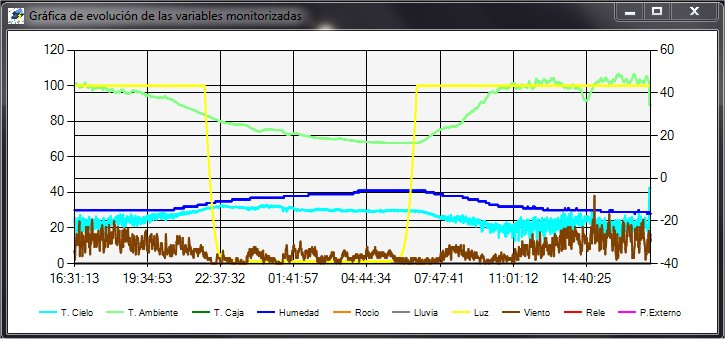 En el caso de que la ventana permanezca abierta, ésta se actualizará automáticamente cada 5 minutos. Si se pulsa el botón Gráfica estando la ventana abierta se producirá un refresco de las gráficas a ese instante. Cuando se abre la ventana de gráficos, o cuando ésta se regenera automáticamente cada cinco minutos, se crea/actualiza automáticamente el fichero MeteoWatcher.jpg con una copia de dicha gráfica. Los valores de Humedad, Lluvia, Luz, Relé y P. Externo se visualizan en una escala comprendida entre 0 y 100, por lo que utilizan el eje de ordenadas (Y) de la izquierda. Los valores de T. Cielo, T. Ambiente, T. Caja, Rocío y Viento utilizan el eje de ordenadas (Y) de la derecha. Los datos visualizados son los mismos que se almacenan en formato CSV, por lo que para estudios más profundos y detallados recomiendo utilizar directamente una hoja de cálculo. |
| Gráficas del Meteo
Watcher 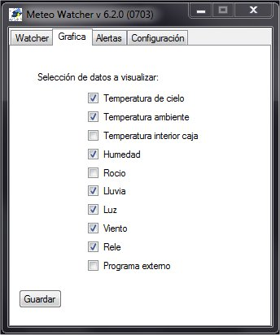 Como se ha indicado previamente, Meteo Watcher puede mostrar de modo gráfico todos los parámetros que monitoriza. En la ventana Grafica podemos seleccionar qué parámetros queremos que se muestren gráficamente. |
| Alertas
de
Meteo Watcher 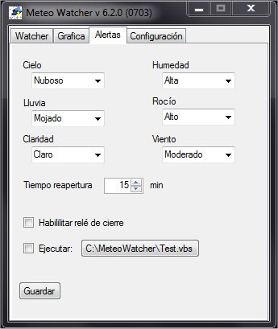
|
|||||||||||||||||||||||||||||||||||||||||||||||||||||||||
| En la ventana de
Alertas se definirá qué parámetros queremos controlar y qué nivel debe
entenderse como inadecuado para operar con el observatorio. Cielo
Lluvia
Claridad
Humedad
Rocío
Viento
Tiempo reapertura
Habilitar relé de cierre
Ejecutar programa externo
Una vez ajustados los parámetros de alerta debe pulsar el botón Guardar para que se almacene en MeteoWatcher.ini la configuración establecida. |
| Configuración
de
Meteo Watcher 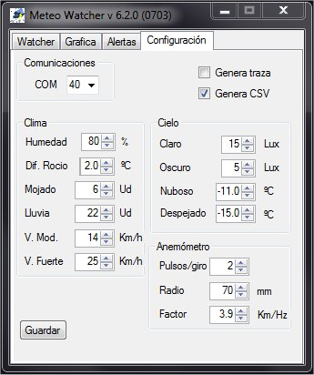
|
||||||||||||||||||||||||||||||||||||||||||||||||||||||||||||||||||
| En la ventana de
Configuración es donde se definen los valores de los parámetros que
fijarán el funcionamiento del Meteo Watcher. COM: Una vez emparejado el Meteo Watcher a través del interfaz de Bluetooth, indicaremos en este campo el puerto serie asignado para las comunicaciones con él. Humedad: Indicaremos el umbral de humedad relativa máximo a partir del cual se entiende hay demasiada humedad ambiente y es perjudicial para el equipo o perjudica notablemente las observaciones. Si se sobrepasa este umbral se indicará en los campos W y r del fichero MeteoWatcher.dat (que se describe posteriormente) como humedad alta. Diferencial de Rocío: Fijaremos el diferencial mínimo admisible en grados centígrados entre la temperatura ambiente y el punto de rocío. Por debajo de ese diferencial se entiende que hay excesivo peligro de condensación. Si se sobrepasa este umbral se indicará en los campos W y r del fichero MeteoWatcher.dat (que se describe posteriormente) como humedad alta. Lluvia: Para realizar el ajuste del sensor de lluvia disponemos de dos umbrales. Mojado y Lluvia. Los valores de estos parámetros pueden variar entre 0 (totalmente seco) y 100 (sumergido en agua). Mojado siempre tendrá que configurarse con un valor inferior a Lluvia. Dependiendo de nuestra ubicación y características climatológicas deberemos experimentalmente fijar estos valores.
Viento: Para realizar el ajuste de la velocidad del viento disponemos de dos umbrales. Moderado y Alto. La velocidad del viento Moderado siempre tendrá que configurarse con un valor inferior a Alto. Dependiendo de nuestra ubicación y características del observatorio deberemos experimentalmente fijar estos valores.
Claridad: Para realizar el ajuste del sensor de luz disponemos de dos umbrales. Oscuro y Claro. Los valores de estos parámetros pueden variar entre 0 (totalmente oscuro) y >7000 (máxima luminosidad). Dependiendo de nuestra ubicación y características climatológicas deberemos experimentalmente fijar estos valores.
Nubosidad: Para realizar el ajuste del sensor de nubes disponemos de dos umbrales. Nuboso y Despejado. Los valores de temperatura del cielo pueden variar desde valores positivos en caso de mucha nubosidad a valores negativos en caso de cielos despejados. Cuanto más despejado más negativa será la temperatura del cielo. Dependiendo de nuestra ubicación y características climatológicas deberemos experimentalmente fijar estos valores.
Anemómetro: Para realizar una razonable caracterización del anemómetro necesitamos conocer y especificar estos parámetros.
Con el fin de facilitar labores de depuración y análisis de datos, existen dos opciones adicionales: Genera traza: Se indica a Meteo Watcher que genere el fichero MeteoWatcher.log, en el mismo directorio donde se encuentre instalado, en el que irá almacenando toda la información relativa a las operaciones que va realizando. Normalmente estará desactivado. Genera CSV: Se indica a Meteo Watcher que almacene en el fichero MeteoWatcher.csv (ubicado en el mismo directorio donde se encuentre instalado) todos los valores leídos en formato CSV. Lo que permitirá analizar con una hoja de cálculo la evolución de los mismos y de este modo refinar el ajuste del sistema. Una vez ajustados los parámetros de configuración debe pulsar el botón Guardar para que se almacene en MeteoWatcher.ini la configuración establecida.
Algunas consideraciones sobre el sensor de lluvia y posibles falsos positivos. Es posible que bajo condiciones de humedad extrema se puedan obtener falsas lecturas de lluvia, al depositarse gran cantidad de agua sobre el sensor de lluvia. Incluso si la temperatura es muy baja este agua puede llegar a convertirse en escarcha o hielo. Algunos equipos incorporan sistemas calefactores que actúan sobre el sensor de lluvia, evaporando el agua que pudiera haberse depositado sobre él. El calor generado por el calefactor provoca una alteración en las medidas de humedad relativa y del dato del punto de rocío. El efecto provocado por el calefactor hace inviable la utilización de dichos parámetros a la hora de gestionar el observatorio. Lo que desde el punto de vista del autor de este diseño es un error. Por otra parte, resulta complicado imaginar una alerta de lluvia sin que previamente no haya saltado la alerta por nubosidad, sin contemplar sistemas de riego automático o similares. Estoy convencido que abrir el observatorio en condiciones extremas de humedad es un error, tanto por asumir riesgos innecesarios para la instalación como porque las observaciones en esas circunstancias no suelen ser satisfactorias. No obstante, si se decide abrir el observatorio en estas condiciones, existe la posibilidad en el Meteo Watcher de desactivar las alertas por lluvia y confiar en el sensor de nubes.
Algunas consideraciones sobre la configuración y precisión del anemómetro. Aunque es posible ajustar el anemómetro para que proporcione una medida bastante exacta de la velocidad del viento, no hay que olvidar que se trata de saber cuándo hay mucho o demasiado viento como para poder abrir o tener que cerrar el observatorio. Una vez ajustado el anemómetro, y con las velocidades de viento relativas que nos proporcione, deberemos determinar de forma experimental qué es viento moderado y qué es viento alto, y con estos valores ajustaremos las alertas del Meteo Watcher.
|
| Especificación del
fichero MeteoWatcher.dat
|
||||||||||||||||||||||||||||||||||||||||||||||||||||||||||||||||||
| Es el fichero de intercambio
de información con otros programas. Se sigue el formato definido por Cyanogen para el Cloud Sensor II en claritymanual.pdf (Cap. 17) 2015-02-01 20:43:50.00 C K -8.7 6.8 8.0 17.5 43 -4.9 0 0 0 00030 042034.86377 3 2 1 1 1 1
|
| Especificación del
fichero MeteoWatcher.csv
|
||||||||||||||||||||||||||
| Es un fichero en formato CSV
e importable directamente desde Excel. La descripción de los campos,
separados por ";", es la siguiente: 2015-02-01;12:29:07;-26.2;15.94;12;41;2.7;1023;1971.77;6.2;1
|
| Ejemplos de MeteoWatcher.csv
|
| Ejemplo 1 Puede descargar el fichero MeteoWatcher-20141219-215638.csv que corresponde a un caso real, en donde fue imposible abrir el observatorio. Los ficheros CSV los puede abrir directamente con Excel, puediendo elaborar resultados gráficos con los datos registrados. El día anterior estuvo lloviendo casi 24 horas seguidas. Al inicio de la sesión (21:56) había abundante niebla, el observatorio estaba tan empapado que hasta el sensor de lluvia detectaba esta circunstancia. Según avanzaba la noche la humedad relativa fue subiendo, llegando a superar el umbral límite (establecido por mi) del 80% a las 22:19. La niebla iba levantando y la temperatura del cielo cada vez era menor, es decir, iba despejando. A las 23:20 el cielo entra en zona de Despejado (< -22ºC), todo está correcto, salvo que la humedad relativa está por encima del 80%. Unos minutos más tarde el cielo vuelve a cubrirse con niebla y la humedad relativa va subiendo poco a poco. Sobre las 01:15 la temperatura de rocío sube y comienza a producirse abundante rocío, por lo que el sensor de lluvia entra en zona de Mojado. La cantidad de rocío sigue aumentando hasta el punto que a las 01:54 entra en zona de Lluvia. A las 03:10 se retira la niebla, pero la humedad relativa es alta y el rocío lo moja todo. En estas circunstancias es posible que la lente pudiese aguantar seca en caso de disponer de cinta calefactora, pero tendríamos el resto del material cubierto de agua. A lo largo de la noche se mantienen estas condiciones, hasta que la temperatura ambiente y el punto de rocío se distancian, gracias a que la humedad relativa baja, y el sensor de lluvia comienza a secarse. Sobre las 07:52 comienza a clarear, el sensor de lluvia ya está en zona de Mojado, hasta que con el calor del Sol termina por secarse totalmente. Ejemplo 2 Un ejemplo de noche donde todo empieza bien, a media noche se nubla y posteriormente vuelve a despejarse: MeteoWatcher-20141226-233410.csv. La gráfica adjunta es una visualización de los principales parámetros de esa sesión. Con el fin de facilitar la visualización se ha realizado un reescalado del relé de Apertura, al que se le ha multiplicado por 100. 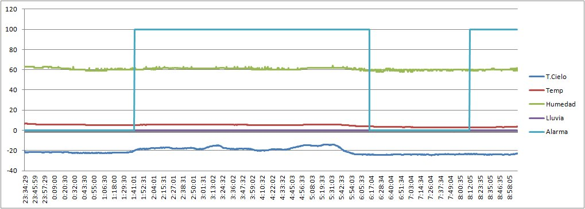 Como puede apreciarse, la sesión comienza sin problemas. A las 01:42 el cielo pasa a estar Nuboso, por lo que se dispara el relé de Apertura y se da orden de cerrar el observatorio. A las 5:45 el cielo vuelve a Despejado y 30 minutos más tarde (Tiempo de Rearme) se desactiva el relé de Apertura y se permite la apertura del observatorio. Hasta que a las 08:12 (amanecer), por exceso de luz se vuelve a disparar el relé de Apertura y se cierra el observatorio. Ejemplo 3 Las previsiones meteorológicas indicaban que la noche del 30 al 31 de Enero de 2015 tendríamos fuertes viento, frío, lluvia y hasta posibilidad de nieve. Lo que parecían las circunstancias ideales para probar la versión del Meteo Watcher con anemómetro. En MeteoWatcher-20150130-150855.csv tenéis más de 17 horas continuas de seguimiento de las condiciones medioambientales, nada propicias para abrir el observatorio. Y ésta es la gráfica obtenida con las telemetrías de la velocidad del viento: 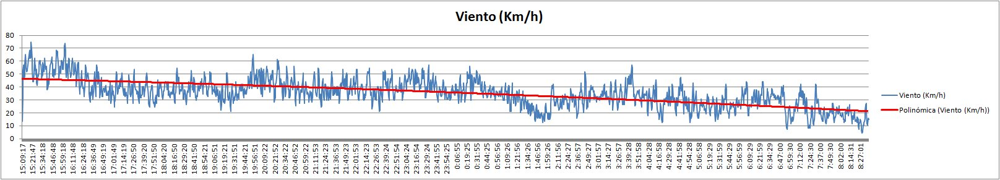 Recordad que la velocidad del viento que se proporciona es la media de las tres últimas mediciones, por lo que se ve muy amortiguado el efecto de las ráfagas. |
| Otras aplicaciones del
Meteo Watcher: ¡Monitorización de un eclipse solar!
|
| Aunque en mis planteamientos
al diseñar el Meteo Watcher no estaba usarlo para este tipo de trabajos, la
imaginación de sus propietarios es mucha, y ésta, por curiosa, he creído
interesante publicarla aquí. Miguel Rodríguez utilizó el sensor de luz del Meteo Watcher para monitorizar el eclipse parcial de Sol que tuvimos el pasado 20/MAR/2015. Con la información almacenada en el fichero de telemetrías en formato csv ha obtenido esta magnífica gráfica, donde puede verse con total nitidez la variación de luminosidad medida durante el eclipse.
¡Gracias Miguel por compartir esta idea e información! |
| Costes de realización
y dirección de contacto
|
Los costes de realización del equipo (con portes a la península incluidos) son:
Si necesitas alguna aclaración, sugerencia o si tienes interés en disponer de un Meteo Watcher, puedes contactar conmigo en: |